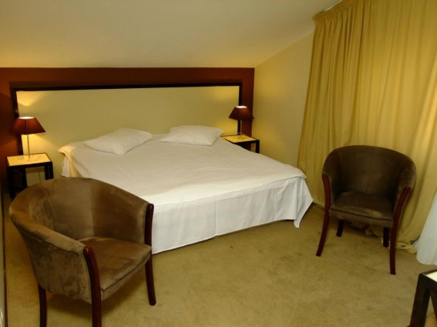
Cameră matrimonială
Confortul de acasă
Pat dublu generos, fotolii tapițate și lumină caldă pentru un somn odihnitor.
Baie proprieAer condiționatBalcon
Pensiune & Restaurant · Bacău
Camere moderne cu balcon și baie proprie, un restaurant tradițional cu 110 locuri și o grădină cu foișor — la ieșirea din Bacău, în cartierul Gherăiești. La Moldavia te oprești și te simți ca acasă.
Despre Moldavia
O pensiune primitoare la ieșirea din Bacău, unde confortul modern se împacă cu ospitalitatea moldovenească.
Pensiunea Moldavia este situată pe Calea Moldovei, în cartierul Gherăiești, la aproximativ 3 kilometri de centrul orașului Bacău. Camerele sunt mobilate modern și au toate dotările de care ai nevoie pentru un sejur liniștit, fie că vii cu treabă, ești în tranzit sau petreci câteva zile în oraș.
Sub același acoperiș găsești cazare îngrijită, un restaurant tradițional cu bar, o terasă la umbră și o grădină amenajată cu foișor. Oaspeții beneficiază de WiFi gratuit în toate spațiile și de parcare gratuită la fața locului.
Ce găsești la noi
Tot ce ai nevoie pentru un sejur comod — de la camere climatizate la restaurant și grădină cu foișor.
Internet wireless gratuit în camere și în toate spațiile comune ale pensiunii.
Parcare proprie gratuită la fața locului, chiar în curtea pensiunii.
Camere climatizate, cu balcon și baie proprie, gândite pentru un somn odihnitor.
Restaurant tradițional cu bar în incintă, pentru mic dejun, prânz sau o cină în tihnă.
Terasă la umbră și grădină amenajată cu foișor, aleie de piatră și verdeață.
Sală și spații potrivite pentru mese festive și evenimente private, la cerere.
Cazare
Camere mobilate modern, fiecare cu baie proprie, aer condiționat și televizor cu cablu. Curățenie asigurată zilnic.

Pat dublu generos, fotolii tapițate și lumină caldă pentru un somn odihnitor.
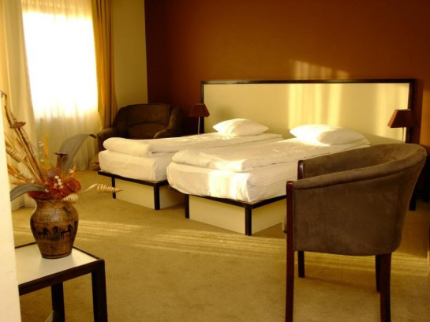
Cameră aerisită cu două paturi și fotolii, ideală pentru prieteni sau colegi de drum.
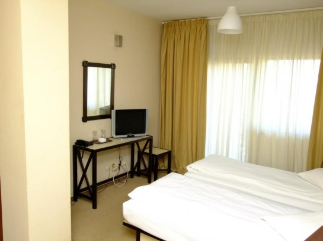
Cameră funcțională cu zonă de birou, oglindă și televizor, gata oricând de oaspeți.
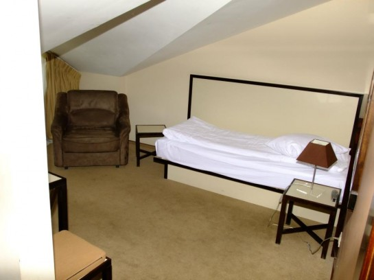
Cameră la mansardă, cu tavan înclinat și atmosferă retrasă, pentru un sejur tihnit.
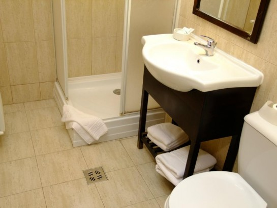
Fiecare cameră are baie proprie cu duș, prosoape și dotări complete, menținute impecabil.
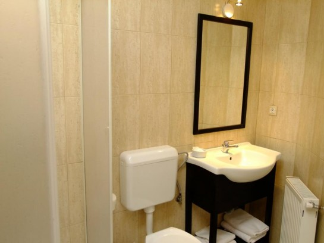
Pensiunea are 15 camere — de la camere single la duble matrimoniale și un apartament.
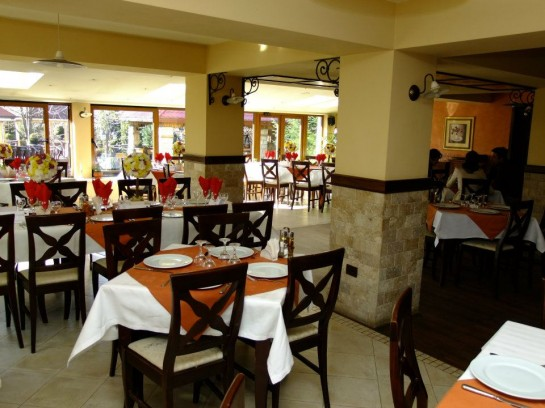
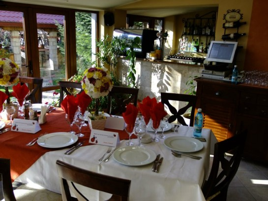
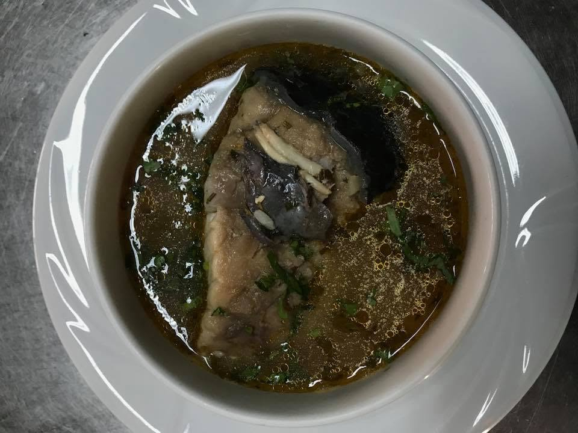
Restaurant tradițional
Restaurantul Moldavia are 110 locuri, împărțite în două saloane — unul pentru nefumători și unul amenajat pentru fumat — cu o atmosferă caldă și primitoare. Bucătăria gătește preparate din meniuri tradiționale românești, cu grijă pentru fiecare oaspete.
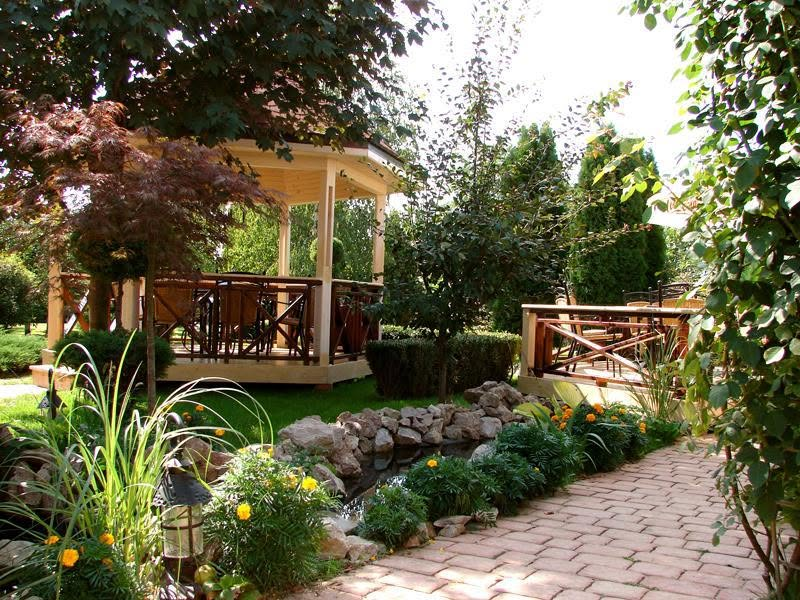
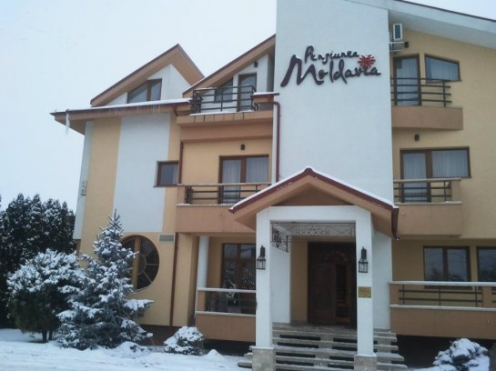
Terasă, grădină & foișor
Când vremea e frumoasă, grădina cu foișor din lemn și aleile de piatră sunt locul perfect pentru o cafea de dimineață sau o seară relaxată. Terasa la umbră și verdeața din jur completează atmosfera de popas de familie, la marginea orașului.
Galerie
Camere, restaurant, terasă și grădină — imagini reale din pensiune.
Rezervări
Sună-ne pentru disponibilitate, tarife de cazare sau o masă la restaurant. Îți răspundem cu drag.
Contact & locație
Calea Moldovei 157 bis, Bacău — la ieșirea din oraș, în cartierul Gherăiești.